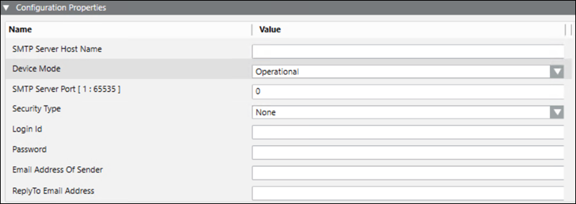
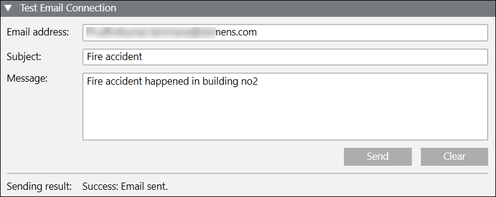
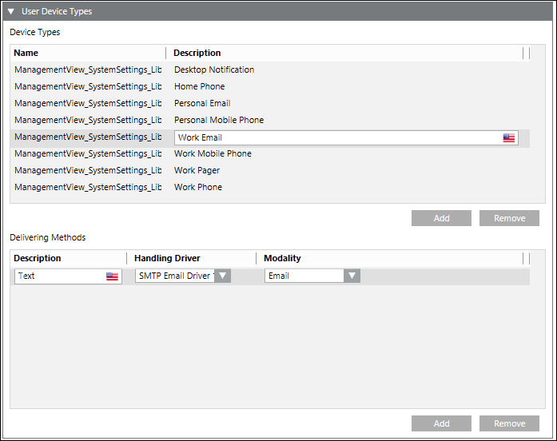

Create a SMTP Email Server
- Select the SMTP Email field network.
- Select the Network Editor tab.
- Click Create
 .
. - In the New object dialog box, do the following:
- Select SMTP Email Server as the Child type.
- Enter a Name.
- Enter Description.
- Click OK.
- In the Device Editor tab that displays, enter a description in the Device Settings expander.
- In the Configuration Properties expander, configure the parameters for SMTP Email Server as stated below (For more information refer to the SMTP Email Server section in Notification Supported HW/SW Device Configurations Guide):

- Enter the IP address in the SMTP Server Host Name field.
- From the Device Mode drop-down list, select Operational so that the driver processes the messaging command and the device configuration change command, and performs status checks for the device. You can also select the following:
- Disabled: In this mode, the driver does not process the messaging command, or the device configuration change command, and can perform status checks for the device. The device remains in a disconnected state.
- Administrative: In this mode, the driver processes the device configuration change command and performs status checks for the device. The device will be in a Disconnected/Connected state based on the connection state. - Enter the port number to use for the SMTP Server in the SMTP Server Port field. Typically, this is 25 for most SMTP Servers.
- Select the desired security option from the Security Type drop-down list, you can select the following:
- None: No secure connection provided.
- SSL: Secure Sockets Layer (SSL) provides secure connection.
- TLS: Transport Layer Security (TLS) provides secure connection. - Enter the SMTP Server’s user name in the Login Id field. Not used if the selected Security Type is None.
- Enter the SMTP Server’s password for the corresponding user account in the Password field. Not used if the selected Security Type is None.
- Enter the email address in the Email Address of Sender field, which displays as Sender ID in the email notifications that are delivered.
- Enter the email address in the Reply to Email Address field, which will be used to receive emails when recipients choose to reply to email notifications.
- In the Test Email Connection expander, you can send a test email.

- Enter the email address, email subject and message in their respective fields.
- Click Send to send the test email message.
- The sending result displays in the expander after the message is sent.
- Click Save
 .
.
- The SMTP Email Server is created.
- The user device type is automatically configured. In the Recipient Editor tab, under the User Device Types expander, you can see that the SMTP Email Driver is set as the handling driver and modality is set as Email.
